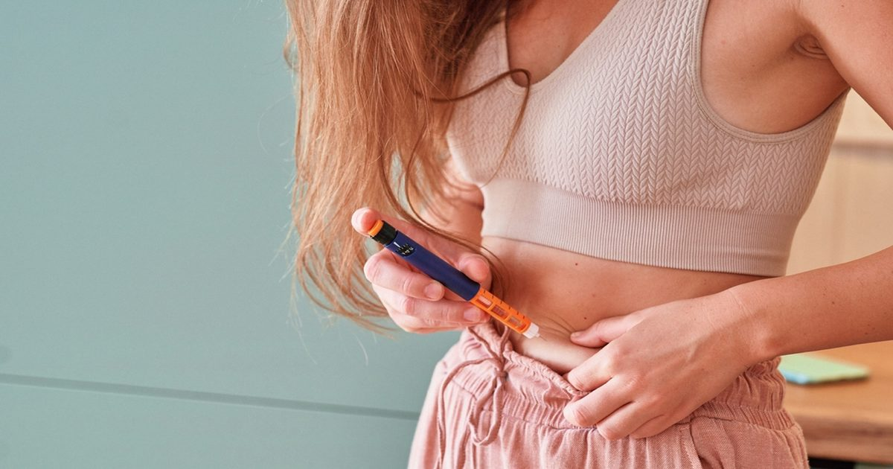

Anjac Health & Beauty представляет специальное предложение для пользователей GLP-1
Французская промышленная группа, специализирующаяся на разработке, производстве и упаковке продуктов для секторов здравоохранения, красоты и пищевых добавок, запускает новую платформу, предназначенную для поддержки людей на лечении GLP-1.
В CPHI Milan, проходящем с 6 по 8 октября 2026 года, Anjac Health & Beauty представляет ряд решений, предназначенных для удовлетворения ключевых потребностей, связанных с этими процедурами, и поддержки пациентов на протяжении всего